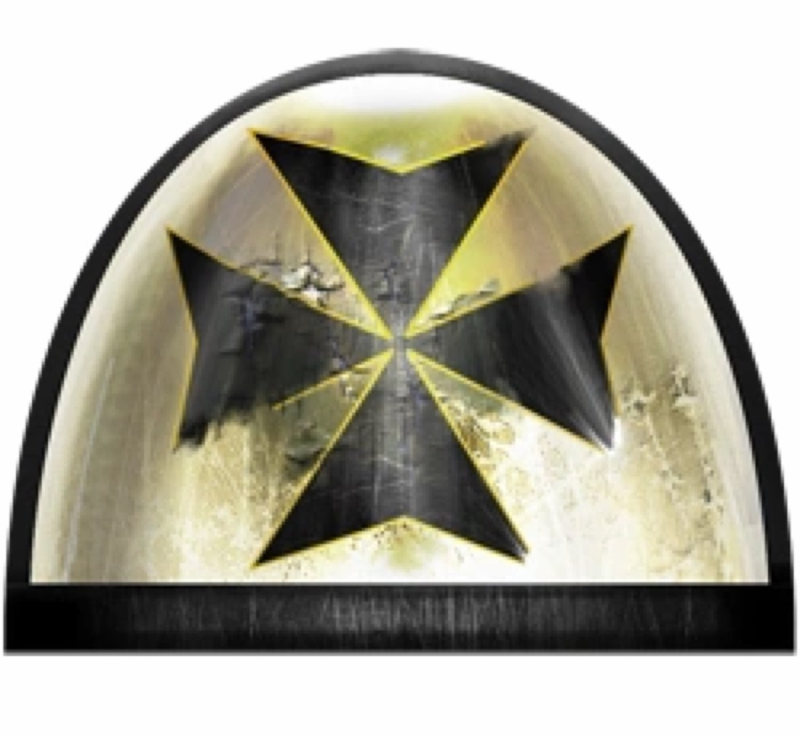
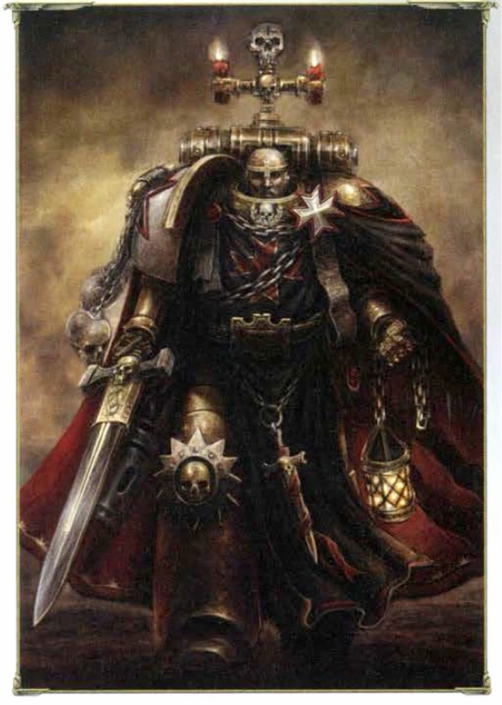

Black Templars
| Black Templars | |
|---|---|
 Badge of the Black Templars: a black cross on white | |
| Founding | Second Founding, c. 021.M31 |
| Progenitor | Imperial Fists (Rogal Dorn) |
| First High Marshal | Sigismund |
| Present High Marshal | Helbrecht |
| Homeworld | None. The Chapter lives aboard its crusade fleets |
| Fortress | The battle barge Eternal Crusader, flagship of the High Marshal; Chapter keeps on conquered worlds |
| Allegiance | Loyalist, Imperium of Mankind |
| Colours | Black, white and red |
| Battle cry | "No pity! No remorse! No fear!" |
| Organisation | Crusades under Marshals; not Codex-compliant |
| Size | Disputed: between one and six thousand |
| Notable crusades | |
| The Terran Crusade (378.M36); the Benedictine War; the Arkron Crusade; the Third War for Armageddon; the Shrine Worlds crusades | |
| Notable members | |
| Sigismund, Sigenandus, Constantine, Ludoldus, Kordhel, Helbrecht, Grimaldus | |
The Black Templars are a loyalist Space Marine Chapter of the Adeptus Astartes, founded in the Second Founding from the gene-seed of the Imperial Fists. They are the Imperium's longest-serving crusaders. Since their founding they have fought a single, unbroken crusade against the enemies of Mankind, carried out through a changing number of crusade fleets and led by a High Marshal who renews its vow. They do not follow the Codex Astartes, they have no homeworld, and, unlike most Space Marines, they venerate the Emperor of Mankind as a god in the manner of the Imperial Cult.[1]
The Chapter's founder, Sigismund, was First Captain of the Imperial Fists and the first Emperor's Champion at the Siege of Terra. After the Heresy he took with him the most zealous of the Imperial Fists, put on his black and white armour, and set out to prove their loyalty by never resting. The Black Templars hate the heretic, the mutant and the witch above other foes, and will not allow psykers in their ranks. In the Era Indomitus, under High Marshal Helbrecht, they have launched new crusades to protect the shrine worlds of the Ecclesiarchy against the daemonic tide of the Great Rift.[2]
History
[edit]The Emperor's Champion
[edit]
During the Siege of Terra many Champions of Chaos came forward from among the Traitors. Rogal Dorn appointed his First Captain, Sigismund, to the office of Emperor's Champion, gave him the best armour and arms of the Legion, and Sigismund swore a holy oath to seek out and destroy them. He challenged more than two dozen of the enemy's leaders to single combat and slew them or sent them back to the Warp.[3] The blade he carried, the Black Sword, became the symbol of the High Marshals.
The Second Founding
[edit]After the Heresy Roboute Guilliman proposed to divide the Legions into Chapters of a thousand, so that no commander should again command the strength of Horus. Rogal Dorn, whose Legion had defended Terra, refused. The dispute became bitter: Dorn called Guilliman a coward, and Guilliman accused Dorn of disloyalty. Leman Russ and Vulkan took Dorn's side and Jaghatai Khan and Corvus Corax took Guilliman's. Only after the Imperial Fists' strike cruiser Terrible Angel was fired on by the Navy, and a new civil war seemed possible, did Dorn give way.[3]
The surviving Imperial Fists were divided into four Chapters. The younger warriors became the Crimson Fists, Dorn's chosen remained the Imperial Fists, and the orbital assault specialists were long believed, wrongly, to have formed the Soul Drinkers. The fourth Chapter was the Black Templars, under Sigismund, who refused to accept the Codex Astartes. He regarded it as an insult to the teachings of Dorn, and led his warriors out into the void to take the war to the enemy.[3]
The first crusades
[edit]Sigismund's first campaign, one of the last of the Great Scouring, was the cleansing of the Donatello System, where a force of Night Lords that held a rearguard for their comrades was destroyed. In 781.M31 he took a fleet to the Cadian Gate to meet the first of Abaddon's Black Crusades. The Black Legion boarded the flagship Eternal Crusader and Sigismund met Abaddon in single combat. He drove the Black Sword into the Despoiler's chest, leaving a scar that Abaddon would carry for ten thousand years, and was killed. The Black Legion withdrew to tend its wounded lord. As he died, Sigismund is recorded as telling his old friend that he would meet the same end as his father: soulless, honourless, weeping and ashamed.[3]
Each High Marshal since has renewed Sigismund's oath. In 544–546.M32 the Chapter formed part of the Last Wall and helped to rebuild the extinct Imperial Fists Chapter, in the War of the Beast, when Vulkan of the Salamanders also took the field.[4] In 401.M34 it ended the Catelexis Heresy by executing a psychic xenos cyborg known as the Cacodominus. A campaign in 831.M35, the Barbarus Incursion, has been sealed as Inconcessus.
Apostasy and Redemption
[edit]In 378.M36, during the Age of Apostasy, crusade fleets returning to the Segmentum Solar found that their Chapter keeps had been destroyed by the Ecclesiarchy's Frateris Templar under High Lord Goge Vandire. High Marshal Sigenandus raised four fleets and led them to Terra in the Terran Crusade. Together with the Imperial Fists, the Soul Drinkers, the zealous Fire Hawks and elements of the Martian Tech-Guard, the Black Templars besieged Vandire's palace for months. Vandire died at the hands of a former bodyguard, Alicia Dominica, who became patron saint of the Adepta Sororitas. Sigenandus then set out to hunt every apostate in the galaxy and died in 522.M36.[4]
In 543.M36 Marshal Gervhart of the Athalor Crusade found that the pilgrim world of Lastrati had turned to blood sacrifice in pursuit of genetic perfection and cleansed it. The Benedictine War of M37 sent the whole Chapter into the xenos-filled Benedictine Sub-sector with five orders of Sisters of Battle, and two High Marshals were killed in succession. When the Ecclesiarch recalled the armies of faith, High Marshal Constantine continued alone and finished the work. The Arkron Crusade of late M38 went into the Ghoul Stars. In 645.M39 the Jerulas Crusade was fought.[4]
The Time of Ending
[edit]The crusade went on through the 41st millennium. At Sharlor the Black Templars destroyed the Penumbral Cult, and when the cult leader was executed a Lord of Change tore its way out of his head and was killed by the Hunter Javelin of Faith. In the Ajaxian Crusade they fought the Broken-worlds Waaagh. The Chapter keep on Cephian IV, raised in 343.M37 on the site of an Alpha Legion defeat, was nearly lost in a Drukhari ambush that coincided with an Alpha Legion subversion of the planet's people.[4]
High Marshal Helbrecht was elected after the death of High Marshal Kordhel at the hands of a frenzied Champion of Chaos. In the Third War for Armageddon he commanded all the Space Marine warships of the system and, with Admiral Parol of the Navy, held the Ork fleet. He left with Commissar Yarrick to hunt the space hulk of Ghazghkull Thraka.[4]
The Era Indomitus
[edit]
At the opening of the Great Rift the Chapter was reinforced by Primaris Space Marines from the Indomitus Crusade, and Helbrecht himself has passed through the transformation. At the request of Roboute Guilliman, the High Marshal sent four crusade fleets, the Aurilla, Ophelia VII, Dachsus and Orteg III Crusades, to guard the shrine worlds of the Ecclesiarchy against heretics, cultists and daemons. A company went to the world of Vigilus to guard one of the few passages across the Rift. In the Rutherian Crusade Castellan Dramos and Imperial Knights of House Mortan relieved the fortress world Ghreddask in the Talledus System against the Iron Warriors, a Word Bearers Dark Apostle and a daemonforge. On the hive world of Krostein the Templars exterminated the whole population to destroy a sorcerous rebellion.[2] The Chapter's latest chronicle, the record of the High Marshal's own crusade, is kept in the Hall of Records aboard the Eternal Crusader.
Organisation
[edit]The Black Templars have no fixed homeworld, and live in crusade fleets. Each fleet is commanded by a Marshal, with the title of Captain in other Chapters, and the High Marshal travels between them in the Eternal Crusader. There are normally at least three crusades in the field; fourteen are recorded at the height of the Treachery of Dalmark. A crusade may be a hundred warriors with their ships, or several full companies. The order of battle of the typical Arkron Crusade of M38 comprised a Marshal's household with an Emperor's Champion, Chaplains, Sword Brethren and Terminators, with four fighting companies under Castellans, each combining Initiates and Neophytes with armour and support.[4]
The ordinary battle-brother is an Initiate, serving in a Crusader Squad led by a Sword Brethren veteran. The Chapter does not have a Scout company. The Chapter's size is a matter of disagreement. The Inquisition has estimated five or six thousand, making it one of the three Chapters, with the Space Wolves and the Grey Knights, that are believed to exceed the thousand permitted by the Codex. Other records describe a Chapter of the usual strength. Only the High Marshal is thought to know. The Black Templars' own accounts say only that each crusade is thousands strong.[4]
Recruitment
[edit]The Chapter recruits through Chapter keeps built on conquered worlds, each of which takes in a few candidates a year. When about two dozen neophytes are ready and approved by the keep's Castellan, Apothecaries and Chaplains, they are sent to a crusade fleet. There they are tested by the Initiates, and each survivor who impresses a battle-brother is taken as his pupil and servant. The mentor swears to prepare his charge for the brotherhood, and the neophyte vows obedience and never to dishonour his master's name.
Combat doctrine
[edit]The Black Templars prefer close combat. They go into battle after an orbital bombardment, using drop pods and gunships, and then land heavy armour to strike the weakest part of the line. Before battle the Emperor's Champion leads the Chapter in renewing one of four vows. They are Suffer Not the Unclean to Live, Uphold the Honour of the Emperor, Abhor the Witch, Destroy the Witch and Accept Any Challenge, No Matter the Odds. The Land Raider Crusader is the characteristic Black Templars transport. They bind weapons to their fists with devotion chains before a battle, a custom that began among the World Eaters and which Sigismund adopted after duelling their warriors aboard Angron's flagship. The Chain of Zeal is a permanent weld that ties a weapon to a gauntlet for life; to remove the glove is a disgrace.[4]
Beliefs and culture
[edit]The Chapter regards the Emperor as a divine being and the Imperial Creed as its faith, which separates it from most other Space Marines. Its special hatred of heretics, mutants and witches comes from Sigismund's contempt for the Astartes who broke their oaths. When a Black Templar kills an enemy champion, he performs Sigismund's judgement. The Chapter has no Librarians and will not fight beside psykers, with the exception of the Grey Knights. They are not, however, hostile to every psyker: astropaths are honoured as holy disciples who have communed with the God-Emperor, and Navigators are valued for their blessing.[4]
The Eternal Crusader is the spiritual centre of the Chapter. It holds many relics, including banners carried before the Emperor in the Great Crusade, a piece of the first aquila and a skull scorched by the Emperor's psychic fire. The Hall of Records aboard keeps the history of the crusades. The scribes of the Hall are mortal and the Chapter has not had a Librarian for as long as records exist. Outsiders suggest that the Chapter treated the Emperor's decree at the Council of Nikaea as holy law, or that its gene-seed has weakened, or that its Librarians were killed in some forgotten disaster.
Gene-seed
[edit]The gene-seed derives from the Imperial Fists. The only peculiarity noted in the Chapter is the absence of psykers, whose cause is disputed (see above).
Heraldry
[edit]The Chapter's armour is predominantly black and white, with devotional images, litanies and seals. The black is a sign, like the Chaplains' black armour in other Chapters, that the wearer serves the Emperor directly. The badge is a black cross on a white field, borne on both shoulders. Squad numbers are stencilled on the right knee in white, and a Crusade Seal on the left greave shows the crusade.
Notable members
[edit]- Sigismund, first High Marshal
- Sigenandus, High Marshal, leader of the Terran Crusade
- Constantine, High Marshal in the Benedictine War
- Ludoldus, High Marshal of the Vinculus Crusade (833.M41)
- Kordhel, High Marshal, killed by a Champion of Chaos
- Helbrecht, present High Marshal
- Grimaldus, Chaplain of the Sons of Grimaldus